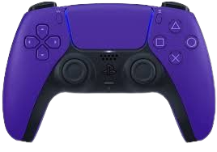
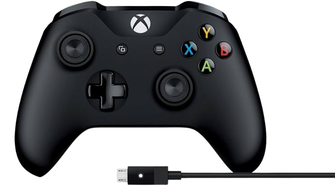

La historia de los videojuegos comenzó en la década de 1940 los primeros juegos electrónicos, seguida por el nacimiento de la industria en la década de 1960 con los primeros videojuegos comerciales. La década de 1970 y principios de la de 1980 fueron la época dorada de los arcades, con la aparición de consolas domésticas, pero la industria experimentó una crisis en la primera mitad de la década de 1980. Sin embargo, se recuperó en la segunda mitad de la década con la llegada de nuevas consolas, y en la década de 1990 se inició la era 3D con gráficos tridimensionales. Finalmente, desde 2005 hasta la actualidad, la industria ha continuado evolucionando con consolas de alta definición, realidad virtual y nuevas tecnologías.
Seamus Blackley
Físico y ejecutivo estadounidense, conocido como el "Padre de la Xbox". Nacido en 1965, Blackley se unió a Microsoft en 1999 y lideró el equipo que desarrolló la Xbox, lanzada en 2001. Su pasión por los videojuegos y su experiencia en física lo llevaron a crear una consola que revolucionó la industria.
PlayStation comenzó en 1994 con el lanzamiento de la primera consola, creada por Ken Kutaragi, que revolucionó la industria con gráficos 3D y CD-ROM.
La PlayStation 2, lanzada en 2000, se convirtió en la consola más vendida de la historia con más de 155 millones de unidades.
La PlayStation 3, lanzada en 2006, introdujo características innovadoras como Blu-ray y procesamiento en paralelo.
La PlayStation 4, lanzada en 2013, se enfocó en la jugabilidad y la experiencia del usuario.
La PlayStation 5, lanzada en 2020, ofreció gráficos mejorados, velocidad de carga rápida y controladores avanzados.


Xbox comenzó en 2001 con el lanzamiento de la primera consola, creada por Seamus Blackley y Kevin Bachus, que introdujo el uso de discos duros y conectividad en línea.
La Xbox 360, lanzada en 2005, se convirtió en una de las consolas más populares de la generación con más de 84 millones de unidades vendidas.
La Xbox One, lanzada en 2013, se enfocó en la integración con la televisión y el entretenimiento en vivo.
la Xbox Series X y Series S, lanzadas en 2020, ofrecieron gráficos mejorados, velocidad de carga rápida y compatibilidad con juegos anteriores.